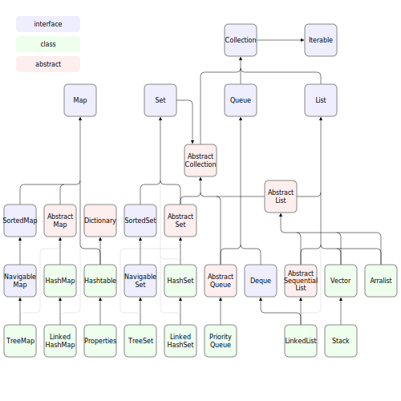
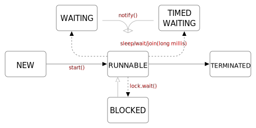

Java: 라이브러리Librarys
예제코드에서 다운로드는 첫 페이지참조
각각의 실습코드는 SUB에 해당하는 폴더를 참조하세요.
표준 라이브러리
오브젝트a1_Object
- 모든 클래스는 Object로부터 시작합니다.
- hashCode() 함수를 통해서 해쉬코드를 구할 수 있습니다.
- clone()을 통해서 복사 할 수 있습니다.
| 메소드 | 설명 |
|---|---|
| protected Object clone() | 복제본을 생성하여 반환 |
| boolean equals(Object obj) | 전달받은 객체가 같은지 여부를 판단 |
| protected void finalize() | 해당 객체를 더는 아무도 참조하지 않아 가비지 컬렉터가 객체의 리소스를 정리하기 위해 호출됨 |
| Class |
해당 객체의 클래스 타입을 반환 |
| int hashCode() | 해당 객체의 해시 코드값을 반환 |
| String toString() | 해당 객체의 정보를 문자열로 반환 |
| void notify() | 해당 객체의 대기(wait)하고 있는 하나의 스레드를 다시 실행할 때 호출 |
| void notifyAll() | 해당 객체의 대기(wait)하고 있는 모든 스레드를 다시 실행할 때 호출 |
| void wait() | 현재 스레드를 일시적으로 대기(wait) (notify받으면 살아남) |
| void wait(long timeout) | 현재 스레드를 일시적으로 대기(wait) (+시간이 지날 때까지) |
| void wait(long timeout, int nanos) | 현재 스레드를 일시적으로 대기(wait) (+시간) (+다른 스레드가 인터럽트(interrupt)) |
배열a2_Array
| 분류 | 함수명 | 설명 |
|---|---|---|
| 출력A | toString | 숫자배열을 출력합니다. |
| asList | 배열을 리스트형태로 반환합니다. String형태로 출력하기 좋습니다. | |
| 초기화B | fill | 지정된 내용으로 채웁니다. |
| setAll | 규칙된 내용으로 채웁니다. | |
| copyOf | 처음부터 복사합니다.(넘치면 Null을 입력합니다.) | |
| copyOfRange | 구간을 정해서 복사합니다.(넘치면 Null을 입력합니다.) | |
| 비교C | compare | 두 배열을 비교합니다. 같으면 0을 반환합니다. |
| mismatch | 두 배열에서 처음으로 차이나는 index를 반환합니다. 같으면 -1을 반환합니다. | |
| equals | 비교영역을 지정해서 반환합니다. true/false로 반환합니다. | |
| 정렬D | sort | 정렬합니다. |
| binarySearch | 찾기합니다.(2진찾기를 수행하기 때문에 정렬한 상태여야 정상동작합니다.) | |
| 해쉬코드E | hashCode | 해쉬코드를 반환합니다. |
| deepHashCode | 숫자가 아닌 객체의 해쉬코드를 반환합니다. |
Stringb_String
| 함수명 | 설명 | |
|---|---|---|
| compareTo | A | 문자열을 비교합니다. ==로 사용할 수 있습니다. |
| compareToIgnoreCase | 문자열을 대소문자 구분 없이 비교합니다. | |
| toUpperCase | B | 대문자로 반환합니다. |
| toLowerCase | 소문자로 반환합니다. | |
| concat | C | 문자열 뒤에 추가 문자열을 추가합니다. |
| indexOf | D | 문자열이 몇 번째에 존재하는지 반환합니다. |
| lastIndexOf | 뒤에서부터 문자열이 몇 번째에 존재하는지 반환합니다. | |
| StringBuffer.concat | E | 문자열 뒤에 추가합니다. |
| ...capacity | 메모리를 확인합니다. | |
| ...deleteCharAt | n번째 글자를 지웁니다. | |
| ...delete | n번째부터 m까지 문자열을 지웁니다. | |
| ...insert | n번째에 문자열을 추가합니다. | |
| ...reverse | 문자열을 거꾸로 저장합니다. | |
StringBuffer는 메모리를 일부손해보지만, 수행한 내용을 바로 반영해줍니다.
| 문자열 메소드 | 설명 |
|---|---|
| char charAt(int index) | 인덱스에 해당하는 문자를 반환 |
| int compareTo(String str) | 사전 편찬 순으로 비교 |
| int compareToIgnoreCase(String str) | 대소문자를 구분하지 않고 사전 편찬 순으로 비교 |
| String concat(String str) | 해당 문자열의 뒤에 문자열을 추가하여 반환 |
|
int indexOf(int ch) int indexOf(String str) |
특정 문자나 문자열이 처음으로 등장하는 위치의 인덱스를 반환 |
|
int indexOf(int ch, int fromIndex) int indexOf(String str, int fromIndex) |
특정 문자나 문자열이 전달된 인덱스 이후에 처음으로 등장하는 위치의 인덱스를 반환 |
| int lastIndexOf(int ch) | 특정 문자가 마지막으로 등장하는 위치의 인덱스를 반환 |
| int lastIndexOf(int ch, int fromIndex) | 특정 문자가 전달된 인덱스 이후에 마지막으로 등장하는 위치의 인덱스를 반환 |
| String[] split(String regex) | 전달된 정규 표현식(regular expression)에 따라 나눠서 반환 |
| String substring(int beginIndex) | 전달된 인덱스부터 끝까지를 새로운 문자열로 반환 |
| String substring(int begin, int end) | 전달된 시작 인덱스부터 마지막 인덱스까지를 새로운 문자열로 반환 |
| String toLowerCase() | 소문자로 변환 |
| String toUpperCase() | 대문자로 변환함 |
| String trim() | 앞과 뒤에 공백 문자를 제거 |
| int length() | 문자열의 길이를 반환 |
| bool isEmpty() | 문자열의 길이가 0이면 true, 아니면 false를 반환 |
Boxingc_Boxing
호환성을 위해서 숫자를 문자열로 받아오는 경우가 은근히 많습니다. 문자열을 숫자로 바꿀 때 자주 이용하게 됩니다.
toBinaryString, toHexString과 같이 자주 사용하는 함수를 사용할 수도 있고, toString(i, 진법)을 사용하여 임의의 진법으로 출력도 가능합니다.
이러한 클래스를 Wrapper Class라고 합니다.
| Data Type | Boxing(Wrapper) class |
|---|---|
| byte | Byte |
| short | Short |
| int | Integer |
| long | Long |
| float | Float |
| double | Double |
| char | Character |
| boolean | Boolean |
Mathd_Math
| 메서드 | 설명 |
|---|---|
| static double random() | 0.0 이상 1.0 미만의 범위 난수 발생 |
| static double abs(a : double / float / int / long) | 절댓값 반환 |
| static double ceil(double a) | 소수 올림 |
| static double floor(double a) | 소수 버림 |
|
static long round(double a) static int round(float a) |
반올림 후 정수를 반환 |
| static double rint(double a) | 반올림 후 double형으로 반환 |
| static double max(a, b : double / float / int / long) | 큰 값을 반환 |
| static double min(a, b : double / float / int / long) | 작은 값을 반환 |
| static double pow(double a, double b) | a^b을 반환 |
| static double sqrt(double a) | 제곱근 반환 |
|
static double sin(double a) static double cos(double a) static double tan(double a) |
삼각 함수 반환 |
| static double toDegrees(double angrad) | 육십분법의 각도 값 반환 |
| static double toRaidans(double angdeg) | 라디안 값 반환 |
시스템 시간e_Time
- Calendar time = Calendar.getInstance(); // 기본적으로 현재시간을 가져옵니다.
System.out.println(time.getTime()); // 저장된 시간을 출력합니다.- set(년, 월, 일, 시, 분, 초) 시간을 설정합니다.
after(..) ..보다 이후인지
before(..) ..보다 이전인지
toLocaleString() 출력텍스트를 변경합니다.
getTimeInMillis() 현재시간을 1/1000으로 바꿉니다.
콜렉션f_Collection
| 종류 | 특징 | 파생 |
|---|---|---|
| List<E> | 순서(○), 중복(○) | Vector, ArrayList, LinkedList, Stack |
| Queue<E> | 순서(○), 중복(○) | Queue, Deque |
| Set<E> | 순서(×), 중복(×) | HashSet, TreeSet |
| Map <K, V> | Key, Value 쌍을 관리 순서(×), 중복(△:Key(×), Value(○)) |
HashMap, TreeMap, HashTable, Properties |

자료구조 계층도
| 단원명 | 설명 | |
|---|---|---|
| Array | A1 | 단순 배열의 추가/제거 예제 |
| A2 | 배열의 정렬예제 | |
| A3 | 배열의 출력 예제 | |
| linked List | B | 연결리스트는 메모리 단점과 검색 이점을 갖음. 사용 예제 |
| stack | C | 스텍(FILO:First In Last Out)의 추가제거 예제 |
| Queue | D | 큐(FIFO:First In First Out)의 추가/제거 예제 |
| hash | E1 | 헤시의 추가/제거 예제 |
| E2 | 헤시의 산출 범위 변경과 중복 문제 예제 | |
| Tree | F1 | 트리를 직접 구현한다면 |
| F2 | 트리의 추가/제거 예제 | |
| F3 | 내림차순을 적용한 트리의 추가/제거 예제 | |
| Map | G1 | 맵의 추가/제거 예제 |
| G2 | key/value가 바뀌었을 때 예제 | |
| G3 | 값을 통한 검색문제 | |
| Iterator | H1 | 반복자 interface를 이용한 제어 예제 |
| H2 | 반복자를 이용하여 이전 데이터 검색 예제 | |
| Comparable | I1 | 비교 interface를 재정의하여 임의의 클래스에서 비교검출 예제 |
쓰레드g_Thread
| 주제 | 설명 | |
|---|---|---|
| thread | A | 쓰레드 생성 및 실행 예제 |
| B | 우선순위(priority)예제 | |
| C | 쓰레드 그룹제어 | |
| D | 동기화 예제 | |
| E | 쓰레드 중단(interrupt) 예제 | |
| extends Thread | implements Runnable | |
|---|---|---|
| 클래스 계층 구조 | 다른 클래스를 상속받고 Thread를 상속받을 수 없음 | 이미 다른 클래스를 상속받아도 Runnable을 구현 가능 |
| 정의 | class ExtendsThread extends Thread | class ImplimentsRunnable impliments Runnable |
| 구현방법 | run() 재정의 | |
| 인스턴스 생성 | ExtendsThread thread = new ExtendsThread() | Thread thread = new Thread(new ImplimentsRunnable) |
| 실행 | start() 호출 | |
| 클래스 결합도 | 강한 결합도(복잡한 계층구조 가능성) | 느슨한 결합도 (단순한 클래스 계층 구조 가능성) |

상태전이
| 상태 | 설명 |
|---|---|
| NEW | Thread 객체가 생성되었지만, 아직 start() 메서드가 호출되지 않은 상태 |
| RUNNABLE | 실행 가능한 상태. start() 메서드가 호출되어 스레드가 실행 중이거나, 실행을 대기하고 있는 상태 |
| BLOCKED | 차단된 상태. 락을 획득하기 위해 다른 스레드가 이미 해당 락을 소유하고 있는 경우 |
| WAITING | 대기 상태. wait() 메서드에 의해 특정 이벤트를 기다리고 있는 상태 |
| TIMED_WAITING | 일정 시간 대기 상태. sleep() 메서드, join() 메서드 또는 일정 시간을 지정한 wait() 메서드에 의해 대기하고 있는 상태 |
| TERMINATED | 종료된 상태. 스레드의 실행이 정상적으로 종료되거나 예외가 발생하여 실행이 완전히 종료된 상태 |
| 함수명 | 설명 |
|---|---|
| start() | 쓰레드를 시작하고 Runnable상태로 만듭니다. |
| join() | 쓰레드가 종료될 때까지 기다립니다. |
| sleep() | 쓰레드를 일정 시간 동안 일시 중지합니다. |
| wait() | 쓰레드를 동기화 블록에서 차단하고 다른 쓰레드가 notify()또는 notifyAll메서드를 호출할 때까지 기다립니다. |
| notify() | 동기화 블록에서 차단된 쓰레드를 하나 깨웁니다. |
| notifyAll() | 동기화 블록에서 차단된 모든 쓰레드를 깨웁니다. |
파일h_FileIO
| 주제 | 내용 | |
|---|---|---|
| 파일 | A1 | d:\에 test.txt파일을 생성하고 작성합니다. |
| A2 | 자기자신의 경로를 가져옵니다. | |
| B | 컴파일 가능한 자바파일C을 생성합니다.(eclipse환경) | |
| C | 스스로를 삭제합니다. | |
네트워크i_Network
| 주제 | 내용 | |
|---|---|---|
| InetAddress | A | "google.com"의 IP주소를 가져옵니다. |
| Socket | B1 | 소켓을 생성합미다. |
| B2 | 소켓으로 "google.com"에 접속을 시도합니다. 응답내용을 .html에 저장합니다. | |
| B3 | 소켓으로 "google.com"에 접속을 시도합니다. 접속주소가 https인 경우 변경된 내용을 보여줍니다. | |
| Sever / Client |
C1 | 서버를 생성합니다.(7777) 접속자에게 "환영합니다"를 출력합니다. |
| C2 | 내 서버에 접속합니다.(7777) C1이 실행중이어야 합니다. 메시지를 받아옵니다. | |
| Sever / Client |
D1 | 서버를 생성합니다.(4040) 동시에 여러 접속자를 받을 수 있습니다. 사용자 채팅을 출력합니다. |
| D2 | 내 서버에 접속합니다.(4040) D1이 실행중이어야 합니다. 메시지를 작성할 수 있습니다. | |
스트림k_Stream
함수의 분류는 함수의 양이 많아서 임의로 분류하였습니다. 분류의 의미는 없습니다.
| 주제 | 내용 | |
|---|---|---|
| stream | A | stream으로 출력합니다. 출력된 내용은 재사용 할 수 없습니다. |
| range | B | 출력 범위를 제한할 수 있습니다. |
| 명시 | C | 출력 내용을 나열하지 않고, 명시 할 수도 있습니다. |
| D |
iterate(): 조건식을 통해, 요소를 추가합니다. empty(): 빈 출력을 생성합니다. count(): 출력갯수를 확인 합니다. |
|
| 조작 | E1 |
distinct(): 중복을 제거합니다. filter(): 조건에 맞는 대상만 출력합니다. |
| E2 |
map(): 요소를 조건에 맞게 변경합니다. flatMap(): 단일 스트림으로 변경합니다. |
|
| E3 |
skip(): 최초 n개의 요소를 거릅니다. limit(): 최대 n개의 요소까지 출력합니다. |
|
| E4 |
sort(): 정렬합니다.(오름차순) 내림차순 정렬을 위해 Comparator.reverseOrder()을 제시합니다. |
|
| E5 | peek(): 중간과정을 처리합니다. | |
| F1 |
reduce(): 하나의 값으로 축소합니다. *optional: java8부터 도입, 출력값 없음을 대비한 클래스 |
|
| F2 |
findFirst(): 첫 요소를 선택 *getAsInt(): optianl객체를 int타입으로 변환 |
|
| F3 |
anyMatch(): 조건에 맞는 요소가 하나라도 있는지 allMatch(): 모든 요소가 조건에 맞는지 |
|
| F4 |
count(): 요소의 갯수 max(): 요소 중 최대값을 선택 max(): 요소 중 최소값을 선택 |
|
| F5 |
sum(): 요소의 합 average(): 평균 값 |
|
| F6 | collect(): 요소를 수집하여, 커스텀 로직으로 구현합니다. | |
| F7 | collect(Collectors): 조건에 따라 n개의 그룹으로 나눕니다. | |
| Optional | G1 |
Null방어 ofNullable(): Null이 대입된 수 있는 상태입니다. Null을 요청할 때, 방어할 목적으로 사용합니다. |
| G2 |
isPresent(): 값이 존재하는지 확인 orElse(""): 존재하지 않을 때, 내용 출력 orElseGet(): 값이 존재 할 때, 값 출력 |
|